library(tidyverse)
library(lubridate)
#library(googlesheets4)
library(vegan)
library(viridis)
library(ggvegan)
library(knitr)
knitr::opts_chunk$set(comment="", cache=T, warning = F, message = F, fig.path = "images_volatiles/", fig.height=8, fig.width=8)
options(digits=4) # for kables
load("data/maxfield_data.rda")with(vt, table(year, type)) %>% kable| air | floral | |
|---|---|---|
| 2018 | 12 | 136 |
| 2019 | 12 | 143 |
| 2020 | 8 | 165 |
with(vt %>% filter(type=="floral"), table(year, water, snow)), , snow = Early
water
year Addition Control Reduction
2018 22 28 15
2019 15 24 15
2020 21 40 19
, , snow = Normal
water
year Addition Control Reduction
2018 25 31 15
2019 42 22 25
2020 26 39 20ggplot(vt %>% drop_na(water), aes(x=factor(date), y=VWC, color=water)) + facet_wrap(vars(year), ncol = 1, scales="free_x") +
geom_boxplot() + scale_color_manual(values=water_pal) + scale_x_discrete(guide = guide_axis(angle=90)) +
labs(x="Date", y="Soil moisture (%VWC)", color="Precipitation")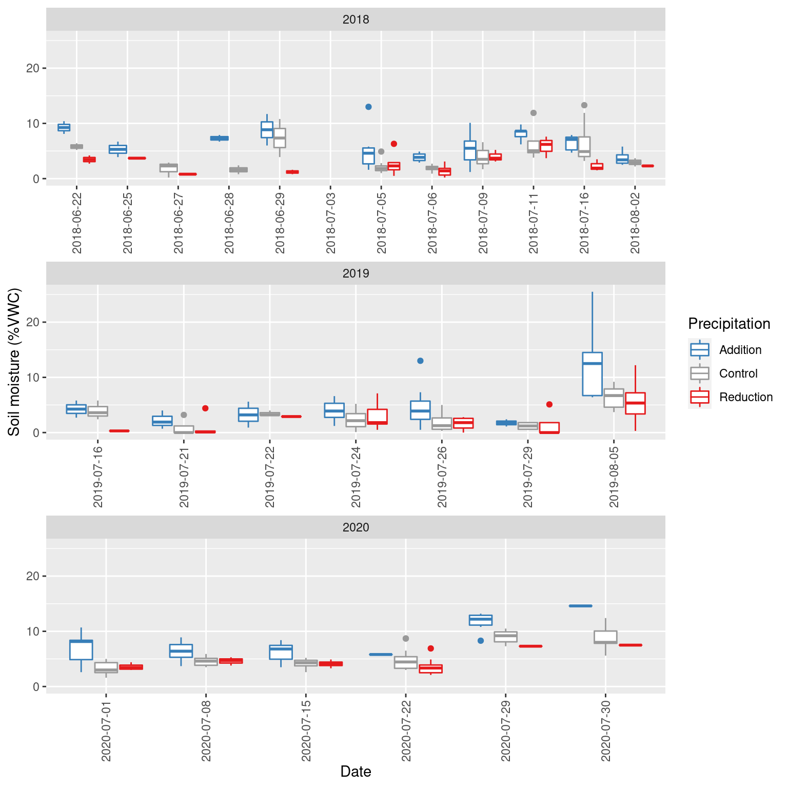
Original code and filtered volatiles from “multivariate voc maxfield.R”
scents.dat <- read.table("data/volatiles/Max.2018.2019_combined_USE_NOV08plantsreduced.tsv", header = T, row.names = 1)
planttype.dat<- read.csv("data/volatiles/Max.2018.2019_combined_USE_NOV08plantsclasses.csv", na.strings=".")
#Drop samples with no volatiles
planttype.dat <- planttype.dat[rowSums(scents.dat) > 0,]
scents.dat <- scents.dat[rowSums(scents.dat) > 0,]
#One row is missing plant data
scents.dat <- scents.dat[!is.na(planttype.dat$precip),]
planttype.dat <- planttype.dat[!is.na(planttype.dat$precip),]
#consolidate mock rainouts and controls
planttype.dat$water <- factor(recode(planttype.dat$precip, mockrainout="Control", Control="Control", addH20 = "Addition", rainout = "Reduction"))
planttype.dat$year <- as.factor(planttype.dat$year)set.seed(5)
chemcols <- sample(rainbow(ncol(scents.dat)))
scents.dat.sorted <- scents.dat[order(rowSums(scents.dat)),]
planttype.dat.sorted <- planttype.dat[order(rowSums(scents.dat)),]
barplot(t(as.matrix(scents.dat.sorted[planttype.dat.sorted$year=="2018",])), col=chemcols, main="2018")
legend("topleft", rev(colnames(scents.dat)[colSums(scents.dat)>100]), fill=rev(chemcols[colSums(scents.dat)>100]))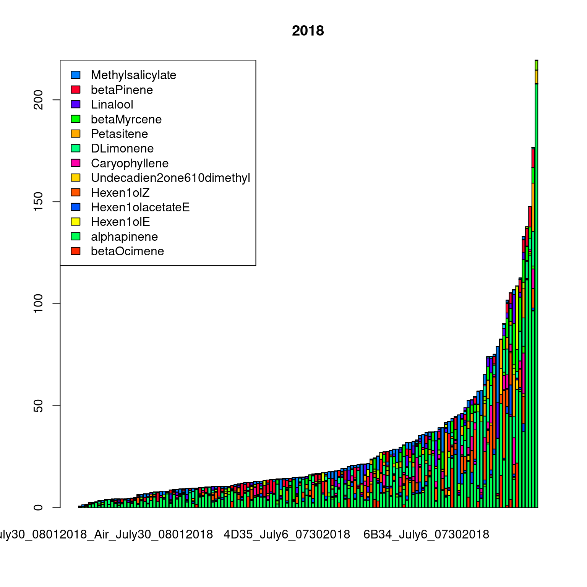
barplot(t(as.matrix(scents.dat.sorted[planttype.dat.sorted$year=="2019",])), col=chemcols, main="2019")
legend("topleft", rev(colnames(scents.dat)[colSums(scents.dat)>100]), fill=rev(chemcols[colSums(scents.dat)>100]))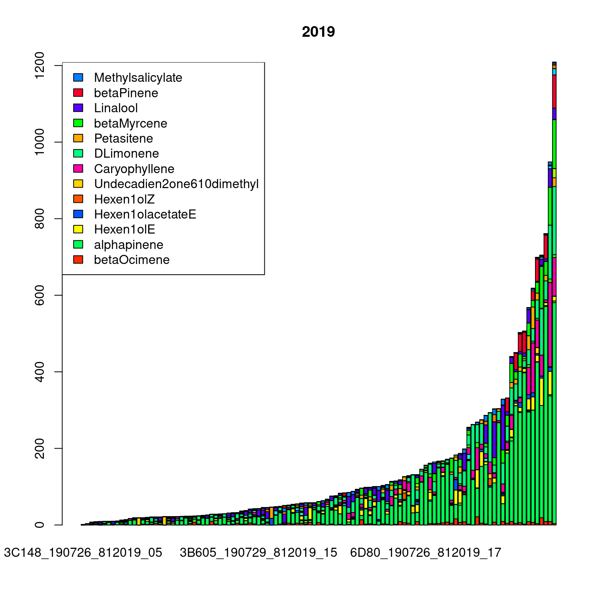
library(viridis)
heatmap(as.matrix(t(scents.dat))^(1/4), scale="none", col=mako(512), ColSideColors=as.character(planttype.dat$year), main="2018 (red) and 2019 (green)")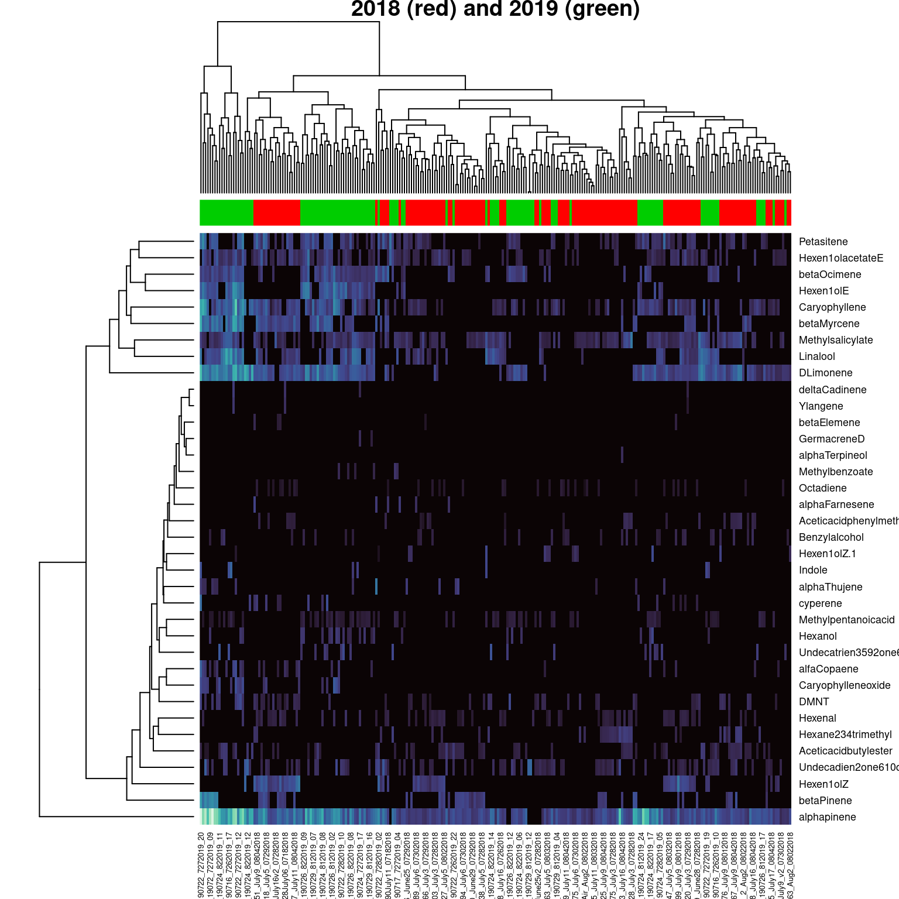
heatmap(as.matrix(t(scents.dat[planttype.dat$year=="2018",]))^(1/4), scale="none", col=mako(512), ColSideColors=as.character(planttype.dat$year[planttype.dat$year=="2018"]), main="2018")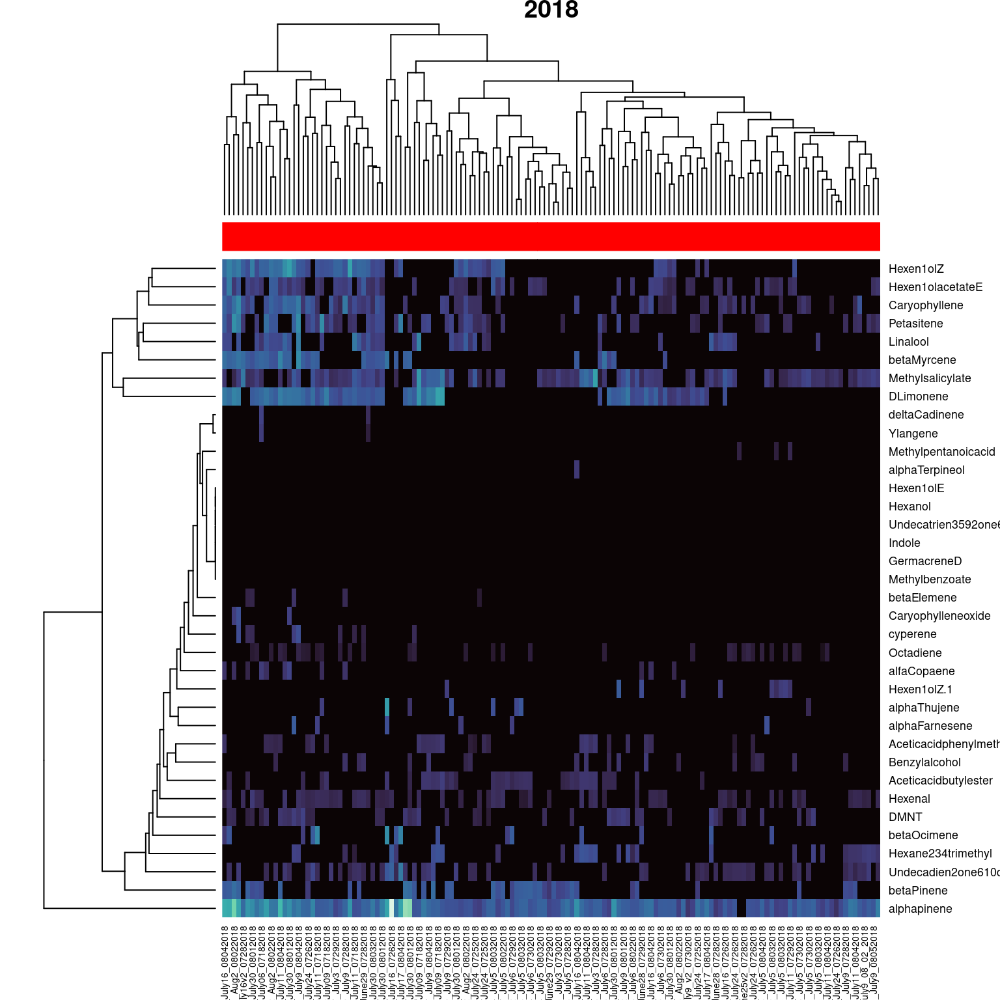
heatmap(as.matrix(t(scents.dat[planttype.dat$year=="2019",]))^(1/4), scale="none", col=mako(512), ColSideColors=as.character(planttype.dat$year[planttype.dat$year=="2019"]), main="2019")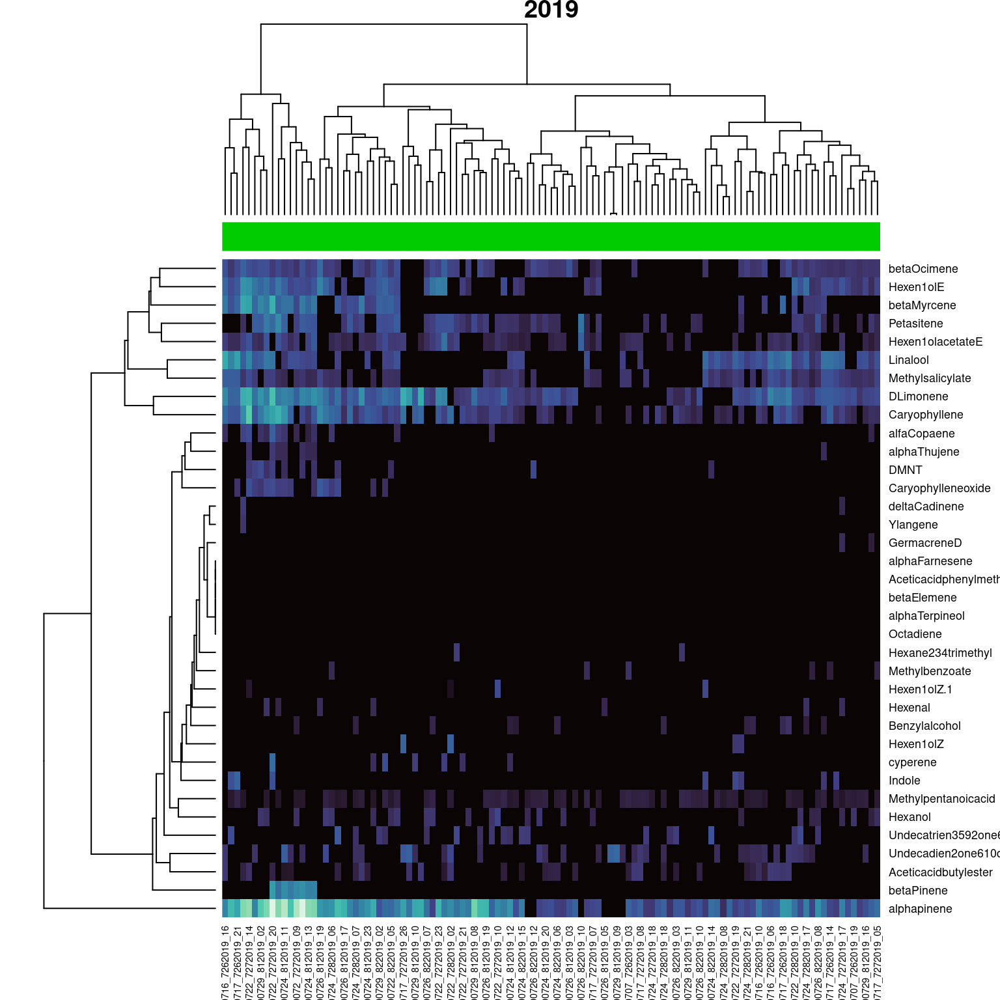
scents.dat.cut <- scents.dat[,colSums(decostand(scents.dat, "pa"))> 20]
cbind(planttype.dat, scents.dat.cut) %>% pivot_longer(-all_of(colnames(planttype.dat))) %>%
#mutate(name = fct_reorder(name, colSums(scents.dat.cut))) %>%
ggplot(aes(x = year, color = water, y = value)) + geom_boxplot() + facet_wrap(vars(name), scales="free_y") +
scale_y_sqrt() + scale_color_manual(values=water_pal) + labs(x="Year", y ="Emissions (ng/hr)") + guides(color=F)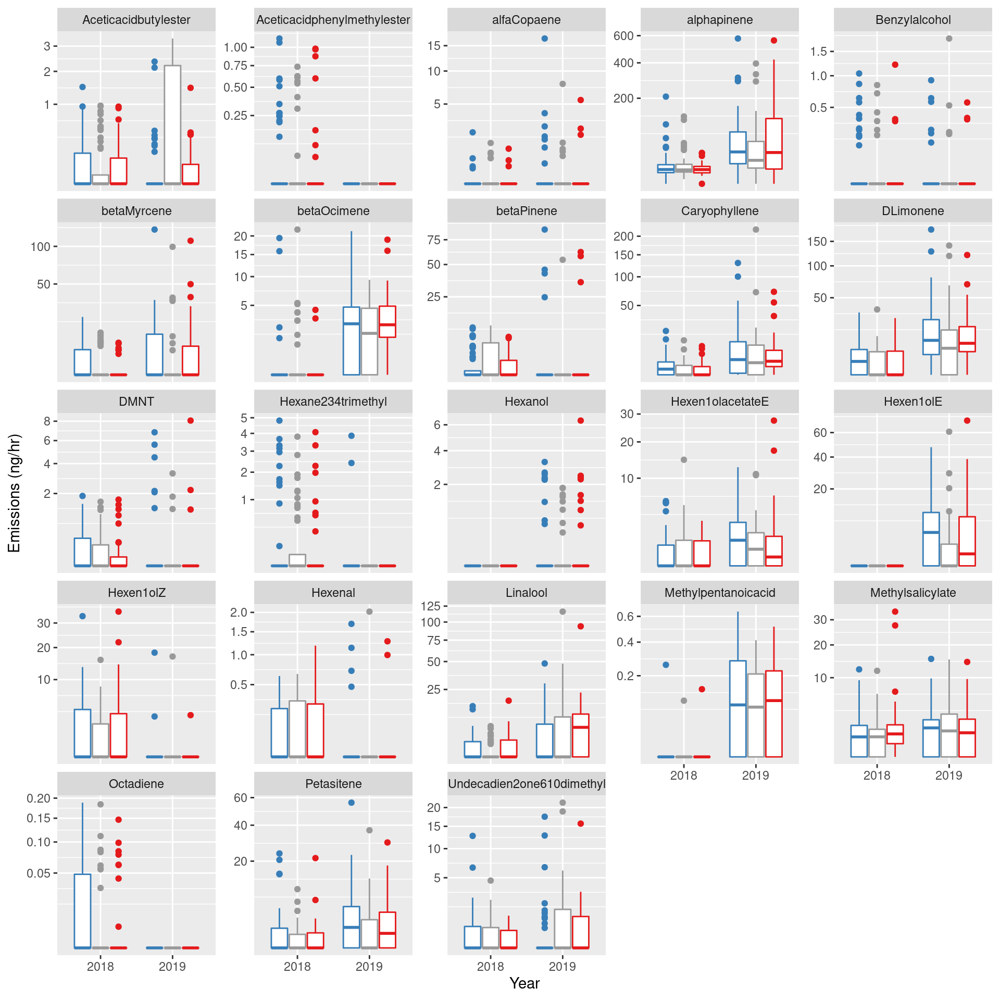
#Nmds
(scents.mds <- metaMDS(sqrt(scents.dat), autotransform=FALSE)) #had noshare = FALSERun 0 stress 0.2201
Run 1 stress 0.2308
Run 2 stress 0.231
Run 3 stress 0.2263
Run 4 stress 0.2266
Run 5 stress 0.2288
Run 6 stress 0.2255
Run 7 stress 0.2268
Run 8 stress 0.2238
Run 9 stress 0.2319
Run 10 stress 0.2244
Run 11 stress 0.2183
... New best solution
... Procrustes: rmse 0.02837 max resid 0.2654
Run 12 stress 0.2268
Run 13 stress 0.222
Run 14 stress 0.2233
Run 15 stress 0.2219
Run 16 stress 0.2282
Run 17 stress 0.2271
Run 18 stress 0.2299
Run 19 stress 0.227
Run 20 stress 0.2245
*** No convergence -- monoMDS stopping criteria:
6: no. of iterations >= maxit
14: stress ratio > sratmax
Call:
metaMDS(comm = sqrt(scents.dat), autotransform = FALSE)
global Multidimensional Scaling using monoMDS
Data: sqrt(scents.dat)
Distance: bray
Dimensions: 2
Stress: 0.2183
Stress type 1, weak ties
No convergent solutions - best solution after 20 tries
Scaling: centring, PC rotation, halfchange scaling
Species: expanded scores based on 'sqrt(scents.dat)' plot(scents.mds,type="t",display=c("species"))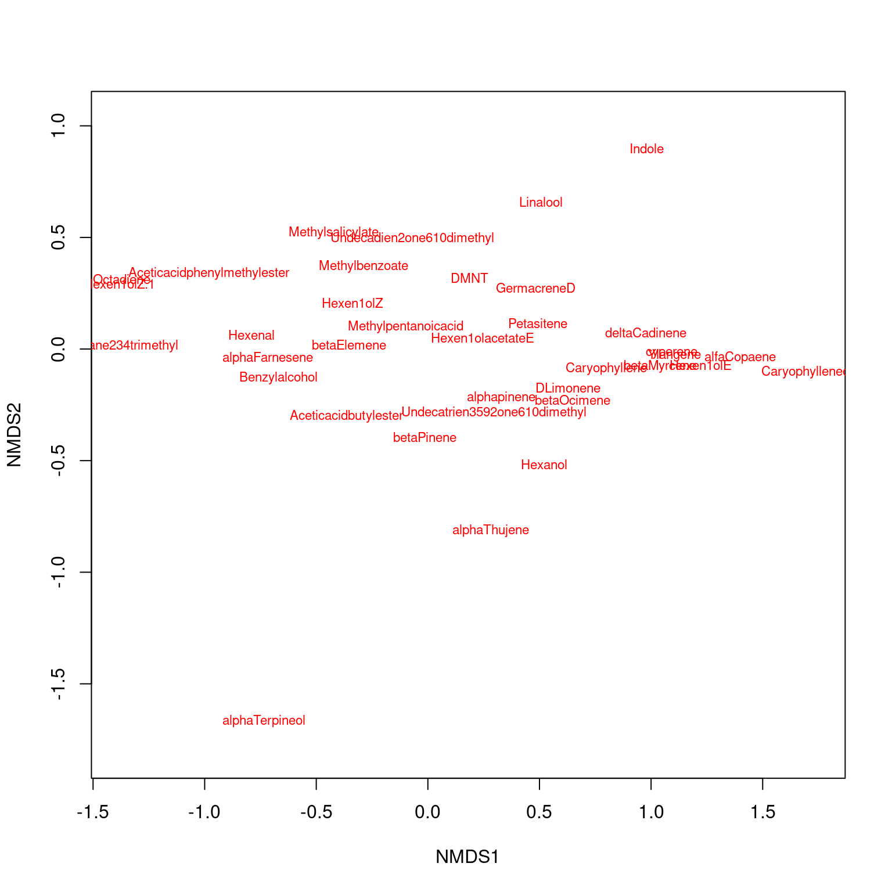
plot(scents.mds,type="t",display=c("sites"))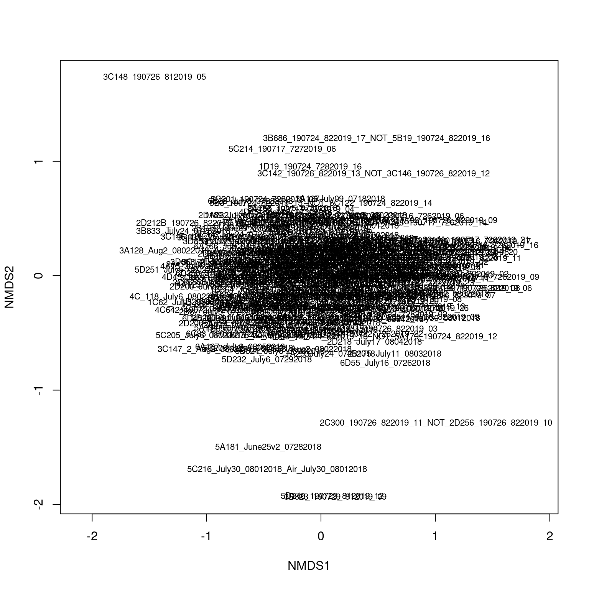
#PerMANOVA using adonis function in vegan package
(scents.permanova <- adonis(sqrt(scents.dat) ~ water * year, planttype.dat))
Call:
adonis(formula = sqrt(scents.dat) ~ water * year, data = planttype.dat)
Permutation: free
Number of permutations: 999
Terms added sequentially (first to last)
Df SumsOfSqs MeanSqs F.Model R2 Pr(>F)
water 2 0.6 0.32 1.6 0.011 0.059 .
year 1 7.3 7.35 36.8 0.127 0.001 ***
water:year 2 0.3 0.17 0.9 0.006 0.611
Residuals 247 49.3 0.20 0.856
Total 252 57.7 1.000
---
Signif. codes: 0 '***' 0.001 '**' 0.01 '*' 0.05 '.' 0.1 ' ' 1#Canonical analysis of principal coordinates (CAP) allows for other distance measures
(scents.cap <-capscale(sqrt(scents.dat) ~ year * water, planttype.dat, dist="bray"))Call: capscale(formula = sqrt(scents.dat) ~ year * water, data =
planttype.dat, distance = "bray")
Inertia Proportion Rank
Total 57.652 1.000
Constrained 8.624 0.150 5
Unconstrained 66.945 1.161 80
Imaginary -17.917 -0.311 172
Inertia is squared Bray distance
Species scores projected from 'sqrt' 'scents.dat'
Eigenvalues for constrained axes:
CAP1 CAP2 CAP3 CAP4 CAP5
7.59 0.40 0.32 0.19 0.13
Eigenvalues for unconstrained axes:
MDS1 MDS2 MDS3 MDS4 MDS5 MDS6 MDS7 MDS8
10.47 5.35 5.07 4.26 3.55 3.37 2.99 2.75
(Showing 8 of 80 unconstrained eigenvalues)anova(scents.cap, by="term")Permutation test for capscale under reduced model
Terms added sequentially (first to last)
Permutation: free
Number of permutations: 999
Model: capscale(formula = sqrt(scents.dat) ~ year * water, data = planttype.dat, distance = "bray")
Df SumOfSqs F Pr(>F)
year 1 7.5 27.55 0.001 ***
water 2 0.7 1.25 0.149
year:water 2 0.5 0.89 0.651
Residual 247 66.9
---
Signif. codes: 0 '***' 0.001 '**' 0.01 '*' 0.05 '.' 0.1 ' ' 1scents.cap <-capscale(sqrt(scents.dat) ~ year + water, planttype.dat, dist="bray")
plot(scents.cap, type="n", xlim=c(-2,2))
points(scents.cap, display = "sites", col=water_pal[planttype.dat$water], pch=as.integer(planttype.dat$year))
text(scents.cap, display="cn", labels=c("2018","2019", names(water_pal)), col=c("black","black",water_pal), font=2)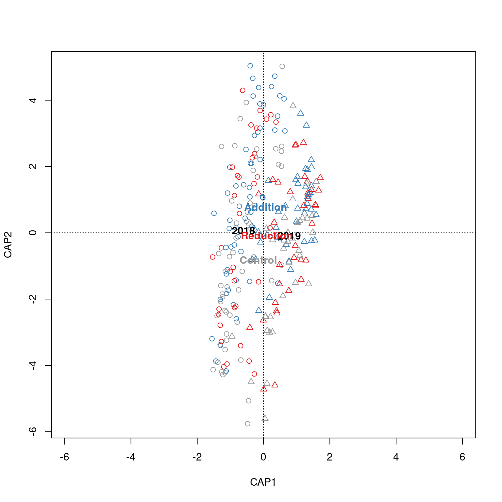
plot(scents.cap, type="n", xlim=c(-1,3), ylim=c(-0.5,0.5))
text(scents.cap, display="sp", cex=0.7)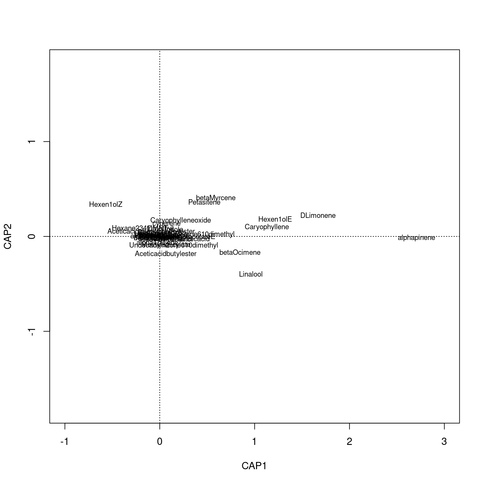
#Nmds
(scents.mds <- metaMDS(decostand(scents.dat, "hellinger"), autotransform=FALSE)) #had noshare = FALSERun 0 stress 0.2511
Run 1 stress 0.2543
Run 2 stress 0.264
Run 3 stress 0.2527
Run 4 stress 0.2512
... Procrustes: rmse 0.01737 max resid 0.1768
Run 5 stress 0.2503
... New best solution
... Procrustes: rmse 0.04105 max resid 0.3175
Run 6 stress 0.2654
Run 7 stress 0.2533
Run 8 stress 0.2525
Run 9 stress 0.2512
Run 10 stress 0.2513
Run 11 stress 0.2522
Run 12 stress 0.264
Run 13 stress 0.2589
Run 14 stress 0.2514
Run 15 stress 0.2622
Run 16 stress 0.2512
Run 17 stress 0.2515
Run 18 stress 0.2522
Run 19 stress 0.2533
Run 20 stress 0.2517
*** No convergence -- monoMDS stopping criteria:
18: no. of iterations >= maxit
2: stress ratio > sratmax
Call:
metaMDS(comm = decostand(scents.dat, "hellinger"), autotransform = FALSE)
global Multidimensional Scaling using monoMDS
Data: decostand(scents.dat, "hellinger")
Distance: bray
Dimensions: 2
Stress: 0.2503
Stress type 1, weak ties
No convergent solutions - best solution after 20 tries
Scaling: centring, PC rotation, halfchange scaling
Species: expanded scores based on 'decostand(scents.dat, "hellinger")' plot(scents.mds,type="t",display=c("species"))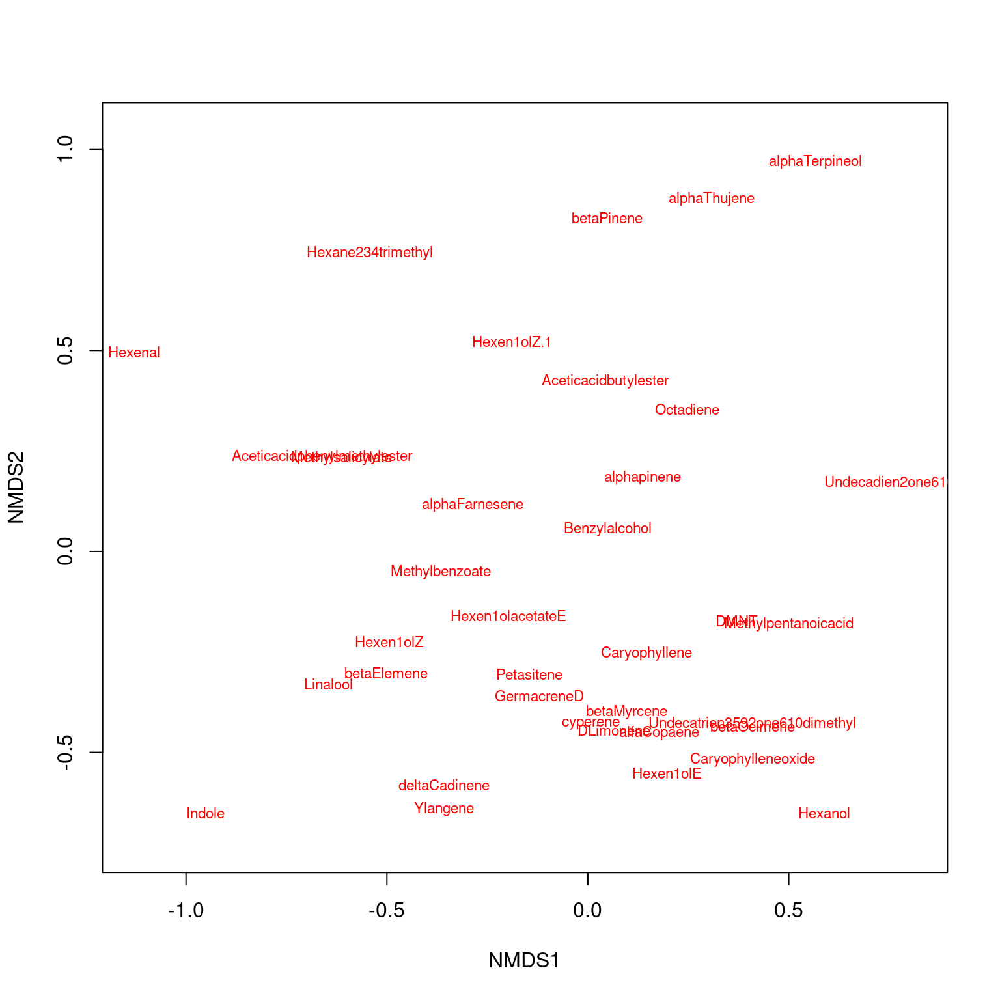
plot(scents.mds,type="t",display=c("sites"))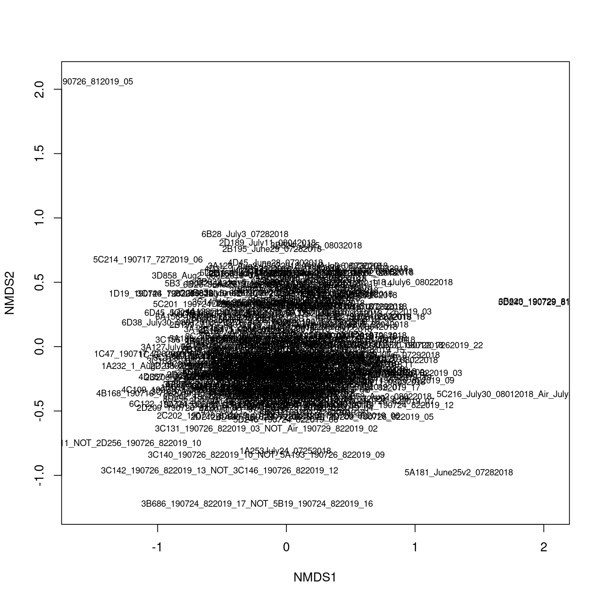
#PerMANOVA using adonis function in vegan package
(scents.permanova <- adonis(decostand(scents.dat, "hellinger") ~ water * year, planttype.dat))
Call:
adonis(formula = decostand(scents.dat, "hellinger") ~ water * year, data = planttype.dat)
Permutation: free
Number of permutations: 999
Terms added sequentially (first to last)
Df SumsOfSqs MeanSqs F.Model R2 Pr(>F)
water 2 0.6 0.29 1.78 0.013 0.024 *
year 1 4.0 3.96 24.46 0.088 0.001 ***
water:year 2 0.3 0.17 1.08 0.008 0.362
Residuals 247 40.0 0.16 0.891
Total 252 44.9 1.000
---
Signif. codes: 0 '***' 0.001 '**' 0.01 '*' 0.05 '.' 0.1 ' ' 1#Canonical analysis of principal coordinates (CAP) allows for other distance measures
(scents.cap <-capscale(sqrt(scents.dat) ~ year * water, planttype.dat, dist="bray"))Call: capscale(formula = sqrt(scents.dat) ~ year * water, data =
planttype.dat, distance = "bray")
Inertia Proportion Rank
Total 57.652 1.000
Constrained 8.624 0.150 5
Unconstrained 66.945 1.161 80
Imaginary -17.917 -0.311 172
Inertia is squared Bray distance
Species scores projected from 'sqrt' 'scents.dat'
Eigenvalues for constrained axes:
CAP1 CAP2 CAP3 CAP4 CAP5
7.59 0.40 0.32 0.19 0.13
Eigenvalues for unconstrained axes:
MDS1 MDS2 MDS3 MDS4 MDS5 MDS6 MDS7 MDS8
10.47 5.35 5.07 4.26 3.55 3.37 2.99 2.75
(Showing 8 of 80 unconstrained eigenvalues)anova(scents.cap, by="term")Permutation test for capscale under reduced model
Terms added sequentially (first to last)
Permutation: free
Number of permutations: 999
Model: capscale(formula = sqrt(scents.dat) ~ year * water, data = planttype.dat, distance = "bray")
Df SumOfSqs F Pr(>F)
year 1 7.5 27.55 0.001 ***
water 2 0.7 1.25 0.142
year:water 2 0.5 0.89 0.601
Residual 247 66.9
---
Signif. codes: 0 '***' 0.001 '**' 0.01 '*' 0.05 '.' 0.1 ' ' 1scents.cap <-capscale(decostand(scents.dat, "hellinger") ~ year + water, planttype.dat, dist="bray")
plot(scents.cap, type="n", xlim=c(-2,2))
points(scents.cap, display = "sites", col=water_pal[planttype.dat$water], pch=as.integer(planttype.dat$year))
text(scents.cap, display="cn", labels=c("2018","2019", names(water_pal)), col=c("black","black",water_pal), font=2)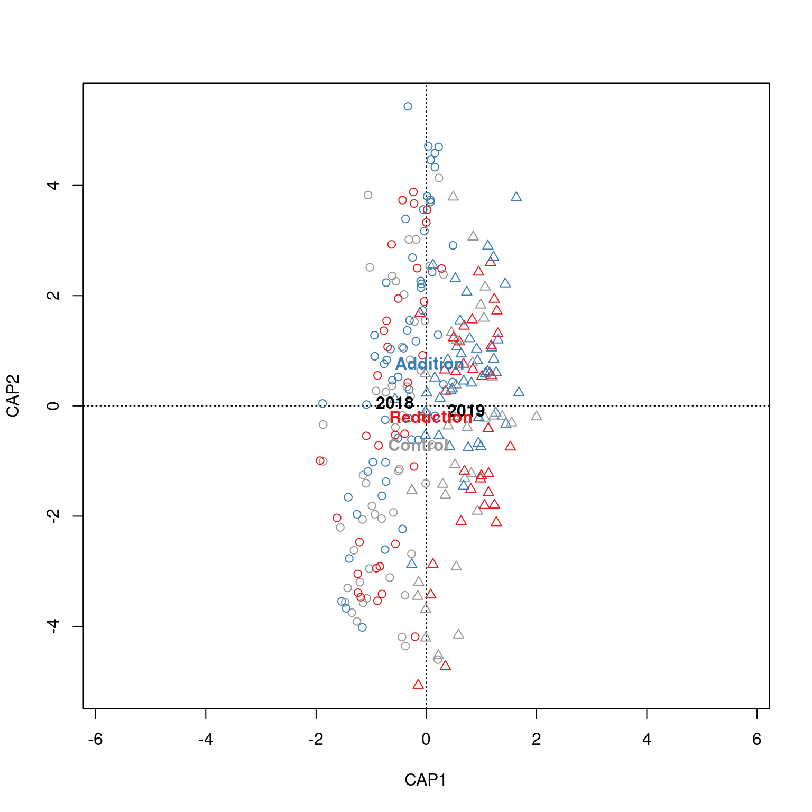
plot(scents.cap, type="n", xlim=c(-1.5,1.5), ylim=c(-0.5,0.5))
text(scents.cap, display="sp", cex=0.7)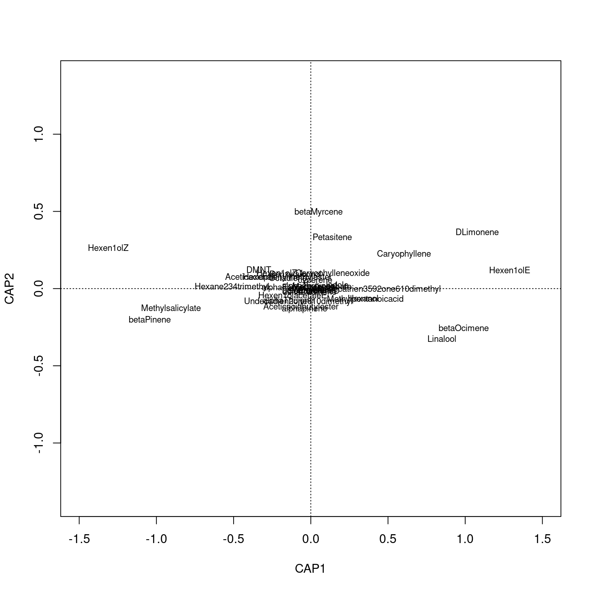
Code from applying_standards_2019-NOV18.R
library(reshape2)
maxcomp <- read.table("data/volatiles/Max.2018.2019_combined_USE_NOV08plantsreduced.tsv",T,"\t",stringsAsFactors=F)
# don't need to remove air samples because they are already removed
#maxcomp <- as.data.frame(t(compounds4[grep("Air_",row.names(compounds4),invert=T),]))
# convert all numbers to numeric: There are a lot of NAs
maxcomp[,-1] <- data.frame(apply(maxcomp[,-1],2,as.numeric))
names(maxcomp)[1] <- "sample"
# make long-format:
maxcomp2 <- reshape2::melt(maxcomp, variable.name = "sample", value.name = "amount")
names(maxcomp2)[2] <- "chem_name"
####now trying to do some data exploration with volatiles####
#import sites
sites<-read.table("data/volatiles/maxfield.sitematch.NOV08.tsv",T,"\t")
# melt for analysis and plotting:
maxcomp3 <- merge(maxcomp2, sites, by = 'sample', sort = F)
#write.table(maxcomp3, file = "maxcomp3_2019-NOV17.csv", col.names = TRUE, row.names = T, sep = ",")
## remove offending compounds:i.e the one that I cannot find "what" it is.
# maxcomp3 <- dplyr::filter(maxcomp3, chem_name != "2-Trimethylsilyl-oxy-2-4-trimethylsilyl-oxy-phenyl-ethanamine")
# log transform amount:
maxcomp3$log_amount <- sapply(maxcomp3$amount, function(x) log(x+0.01, 10) + 2)# let's plot some histograms:
# first: raw data prior to transformation
# assign facet to data groups above zero:
ggplot(maxcomp3[maxcomp3$amount > 0, ], aes(x = amount)) +
geom_histogram(bins = 100) +
theme_bw() +
xlab("untransformed data (zeros not shown)")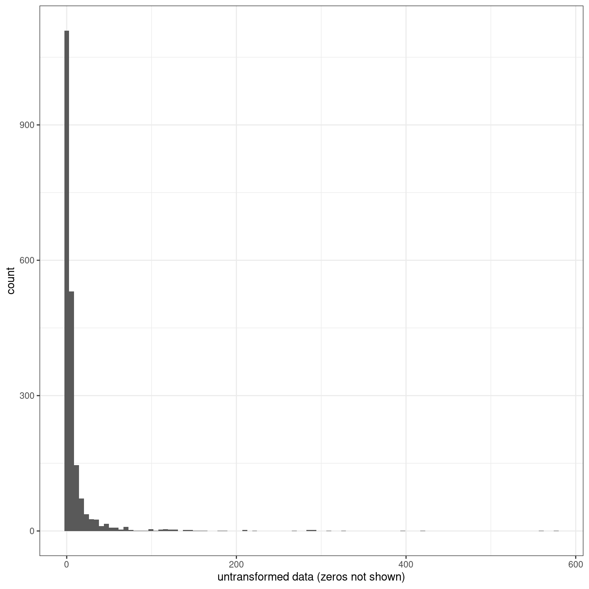
ggplot(maxcomp3[maxcomp3$log_amount > 0, ], aes(x = log_amount)) +
geom_histogram(bins = 100) +
theme_bw() +
xlab("log-transformed data")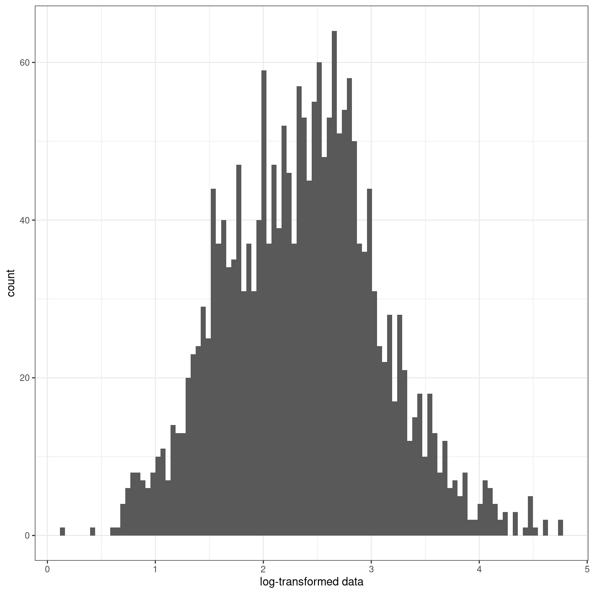
# save raw plots together:
#library(cowplot)
#plot_grid(raw_1,raw_2) %>% ggsave(filename = "raw_plots_v1.pdf", width = 6.5, height = 3.25)# re-casting, using log scale for amount as value var:
maxcomp4 <- dcast(maxcomp3, precip + sample + snow.removal + plot_ID ~ chem_name, value.var="log_amount", fun.aggregate = function(x) log(sum(10^(x - 2)), 10) + 2)
#write.table(maxcomp3, file = "maxcomp_3.csv", col.names = TRUE, row.names = T, sep = ",")
# define vector of compound_names
compound_names <- paste0(levels(maxcomp3$chem_name))
# find rows whose compounds sum to zero:
maxcomp4$compound_sum <- rowSums(maxcomp4[,names(maxcomp4) %in% compound_names])
samples_without_data <- paste0(maxcomp4$sample[maxcomp4$compound_sum==0])
maxcomp4 <- droplevels(maxcomp4[!maxcomp4$sample %in% samples_without_data, ])
# generate composite treatment by combining control conditions:
maxcomp4$treatment[grepl('add ', maxcomp4$precip)] <- 'add_H2O'
maxcomp4$treatment[grepl('rainout', maxcomp4$precip)] <- 'rainout'
maxcomp4$treatment[grepl('mock', maxcomp4$precip)] <- 'Control'
maxcomp4$treatment[grepl('Control', maxcomp4$precip)] <- 'Control'
maxcomp4$year[grepl('2018', maxcomp4$sample)] <- '2018'
maxcomp4$year[grepl('2019', maxcomp4$sample)] <- '2019'
# generate response matrix for all, 2018, and 2019:
Y18 <- as.matrix(maxcomp4 %>% dplyr::filter(year == '2018') %>% dplyr::select(compound_names))
Y19 <- as.matrix(maxcomp4 %>% dplyr::filter(year == '2019') %>% dplyr::select(compound_names))
YAA <- as.matrix(maxcomp4 %>% dplyr::select(compound_names))
if (!dim(YAA)[1] == (dim(Y18)[1] + dim(Y19)[1])) {
# scream
}
# now remove compounds with zero abundances within Y18 and Y19
Y18 <- Y18[, colSums(Y18) > 0]
Y19 <- Y19[, colSums(Y19) > 0]
maxcomp4$treatment <- factor(maxcomp4$treatment)# MANOVA on treatment
manova.scents.18 <- manova(Y18 ~ maxcomp4$treatment[maxcomp4$year == '2018'])
manova.scents.19 <- manova(Y19 ~ maxcomp4$treatment[maxcomp4$year == '2019'])
manova.scents.YA <- manova(YAA ~ maxcomp4$treatment)
# combined year analysis
summary(manova.scents.YA, test = "Wilks") Df Wilks approx F num Df den Df Pr(>F)
maxcomp4$treatment 2 0.726 1.04 72 430 0.4
Residuals 250 # Df Wilks approx F num Df den Df Pr(>F)
# maxcomp4$treatment 2 0.7257 1.0384 72 430 0.4002
# Residuals 250
# 2018 alone
# combined year analysis
summary(manova.scents.18, test = "Wilks") Df Wilks approx F num Df den Df
maxcomp4$treatment[maxcomp4$year == "2018"] 2 0.637 0.929 60 220
Residuals 139
Pr(>F)
maxcomp4$treatment[maxcomp4$year == "2018"] 0.62
Residuals # Df Wilks approx F num Df den Df Pr(>F)
# maxcomp4$treatment[maxcomp4$year == "2018"] 2 0.63655 0.92906 60 220 0.6235
# Residuals 139
# 2019 alone
# combined year analysis
summary(manova.scents.19, test = "Wilks") Df Wilks approx F num Df den Df
maxcomp4$treatment[maxcomp4$year == "2019"] 2 0.492 1.07 62 156
Residuals 108
Pr(>F)
maxcomp4$treatment[maxcomp4$year == "2019"] 0.36
Residuals # Df Wilks approx F num Df den Df Pr(>F)
# maxcomp4$treatment[maxcomp4$year == "2019"] 2 0.49212 1.0706 62 156 0.3622
# Residuals 108 ## SNOW MELT
# combined year analysis
# MANOVA on treatment
manova.snowremoval.18 <- manova(Y18 ~ maxcomp4$snow.removal[maxcomp4$year == '2018'])
manova.snowremoval.19 <- manova(Y19 ~ maxcomp4$snow.removal[maxcomp4$year == '2019'])
manova.snowremoval.YA <- manova(YAA ~ maxcomp4$snow.removal)
summary(manova.snowremoval.YA, test = "Wilks") Df Wilks approx F num Df den Df Pr(>F)
maxcomp4$snow.removal 1 0.856 1.01 36 216 0.46
Residuals 251 # Df Wilks approx F num Df den Df Pr(>F)
# maxcomp4$snow.removal 1 0.85602 1.0091 36 216 0.4616
# Residuals 251
summary(manova.snowremoval.18, test = "Wilks") Df Wilks approx F num Df den Df
maxcomp4$snow.removal[maxcomp4$year == "2018"] 1 0.738 1.31 30 111
Residuals 140
Pr(>F)
maxcomp4$snow.removal[maxcomp4$year == "2018"] 0.15
Residuals # Df Wilks approx F num Df den Df Pr(>F)
# maxcomp4$snow.removal[maxcomp4$year == "2018"] 1 0.73786 1.3145 30 111 0.1549
# Residuals 140
summary(manova.snowremoval.19, test = "Wilks") Df Wilks approx F num Df den Df
maxcomp4$snow.removal[maxcomp4$year == "2019"] 1 0.694 1.12 31 79
Residuals 109
Pr(>F)
maxcomp4$snow.removal[maxcomp4$year == "2019"] 0.33
Residuals # Df Wilks approx F num Df den Df Pr(>F)
# maxcomp4$snow.removal[maxcomp4$year == "2019"] 1 0.69374 1.125 31 79 0.3307
# Residuals library(candisc)
scents.can.YA <- candisc(manova.scents.YA, data = maxcomp4, scores = TRUE)
scents.can.18 <- candisc(manova.scents.18, data = maxcomp4[maxcomp4$year == '2018', ], scores = TRUE)
scents.can.19 <- candisc(manova.scents.19, data = maxcomp4[maxcomp4$year == '2019', ], scores = TRUE)
#pdf(file = "canda_v1_2019-NOV-19_YA.pdf",width=8,height=4)
#par(mfrow=c(1,2))
plot(scents.can.YA, col=c("white","white","white"), conf = 0.95,lwd=0.5,var.cex=0.7,
cex.axis=0.75,var.col="gray40",bty="n",alpha=0.5)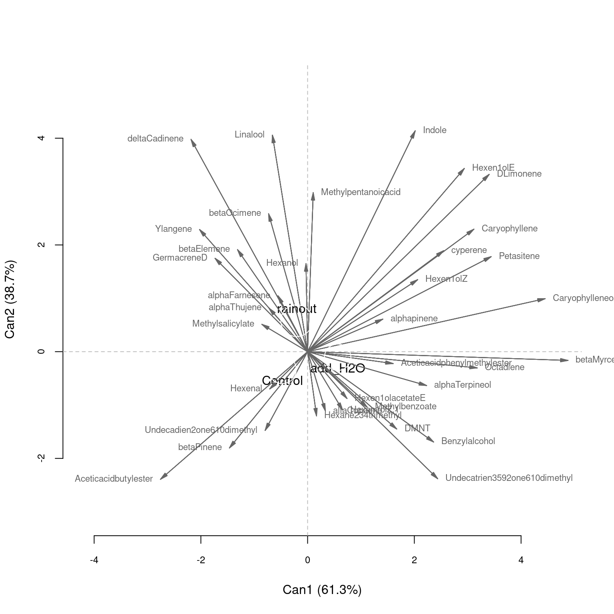
plot(scents.can.YA, col=c("gray60","darkorange2","dodgerblue"), pch=c(19,19,19), conf = 0.95,
var.labels = NULL, var.lwd=0,var.col = NULL,
cex.axis=0.75,bty="n")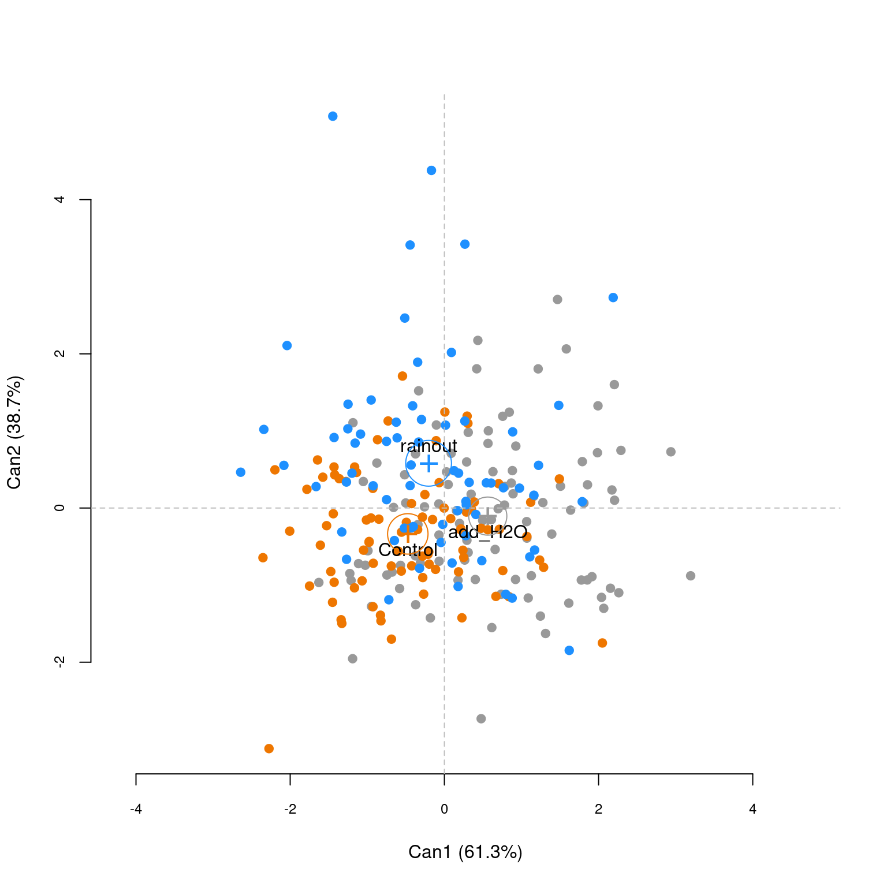
#dev.off()
print("2018")[1] "2018"# pdf(file = "canda_v1_2019-NOV-19_2018.pdf",width=8,height=4)
# par(mfrow=c(1,2))
plot(scents.can.18, col=c("white","white","white"), conf = 0.95,lwd=0.5,var.cex=0.7,
cex.axis=0.75,var.col="gray40",bty="n",alpha=0.5)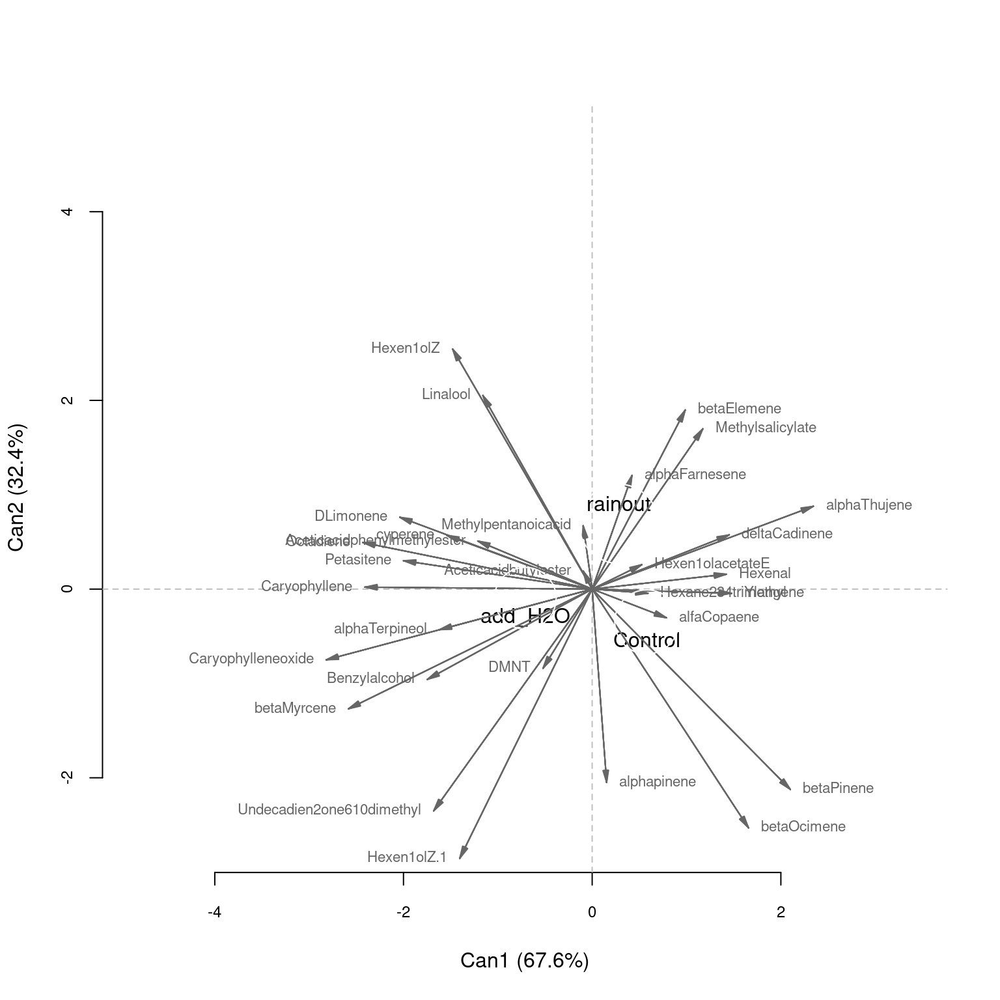
plot(scents.can.18, col=c("gray60","darkorange2","dodgerblue"), pch=c(19,19,19), conf = 0.95,
var.labels = NULL, var.lwd=0,var.col = NULL,
cex.axis=0.75,bty="n")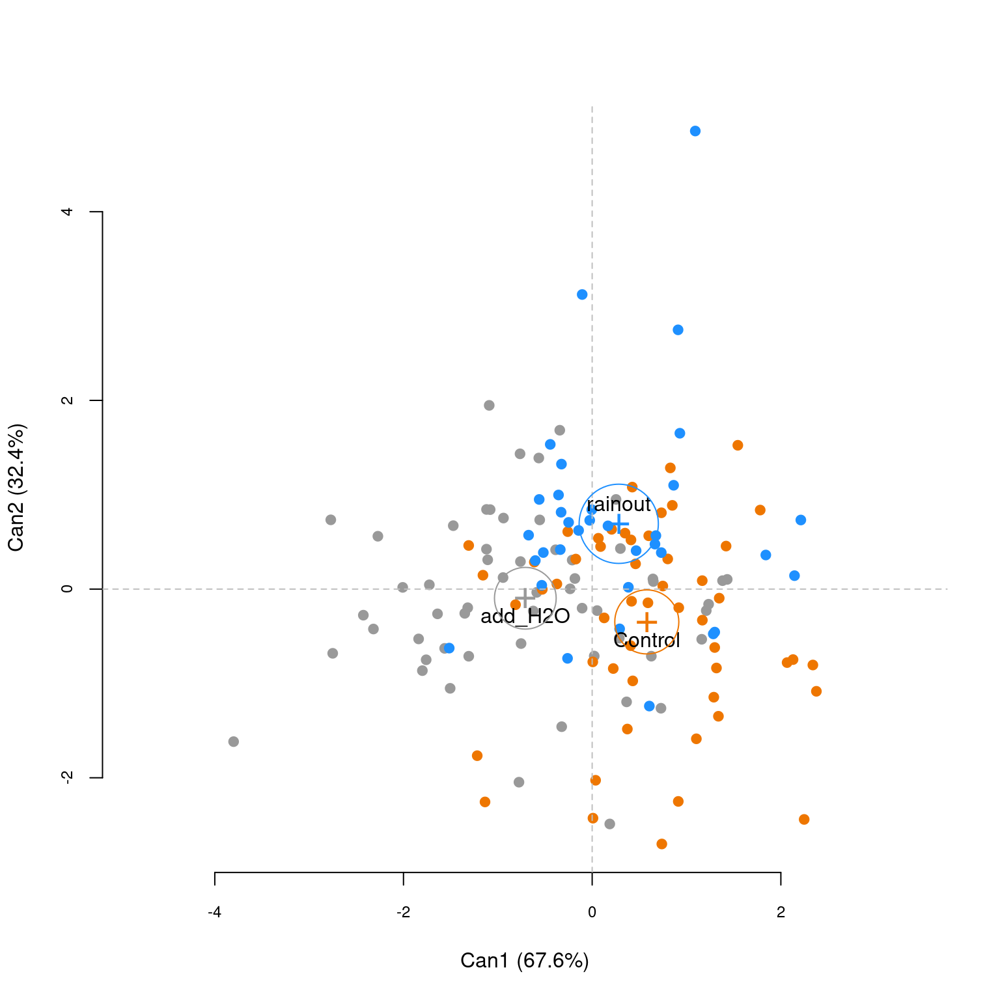
# dev.off()
#
print("2019")[1] "2019"# pdf(file = "canda_v1_2019-NOV-19_2019.pdf",width=8,height=4)
# par(mfrow=c(1,2))
plot(scents.can.19, col=c("white","white","white"), conf = 0.95,lwd=0.5,var.cex=0.7,
cex.axis=0.75,var.col="gray40",bty="n",alpha=0.5)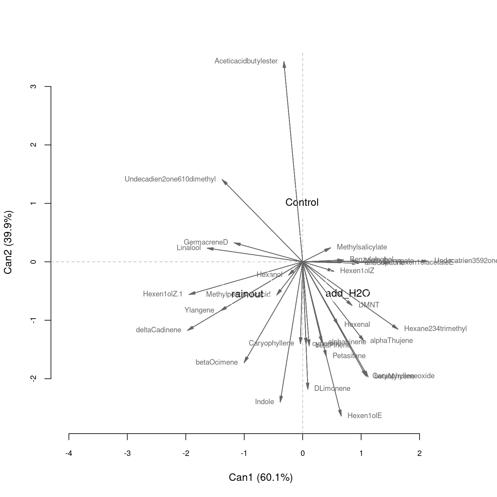
plot(scents.can.19, col=c("gray60","darkorange2","dodgerblue"), pch=c(19,19,19), conf = 0.95,
var.labels = NULL, var.lwd=0,var.col = NULL,
cex.axis=0.75,bty="n")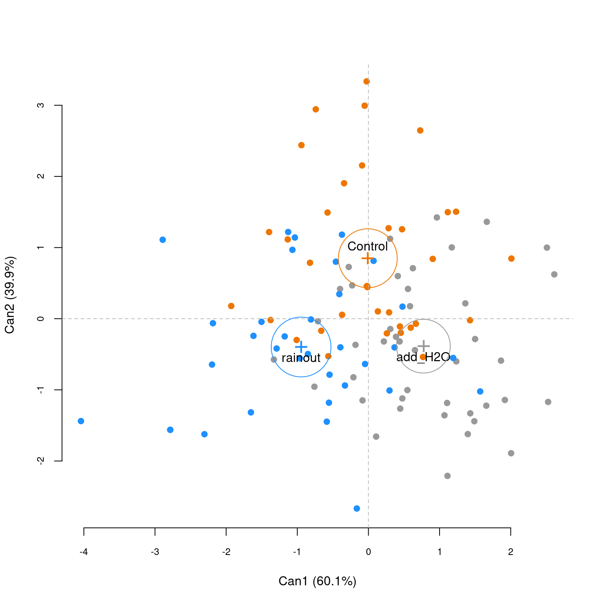
# dev.off()library(gplots)
library(RColorBrewer)
# define colors:
cols <- c("gray60","darkorange2","dodgerblue")[as.numeric(maxcomp4$treatment)]
hmcol <- colorRampPalette(brewer.pal(9, "GnBu"))(100)
hclustfun <- function(X) hclust(X,method="median")
heatmap.2(t(scents.dat), labCol=maxcomp4$treatment,
trace="none",
ColSideColors=cols,
col=hmcol,
distfun = dist,
hclustfun = hclust)#scents.can1 <- candisc(manova.scents1, data = maxcomp4, scores = TRUE)
#scents.can
#scents.can1
#Scores are the standardized response variables times the raw canonical coefficients
#coef(scents.can.YA, type="raw")
#scents.can["scores"]
coef_test <- cbind(coef(scents.can.YA, type="raw"),
coef(scents.can.YA, type="structure"))
# correlation between raw and structure coefficients from scents.can
plot(coef_test[,1],coef_test[,3])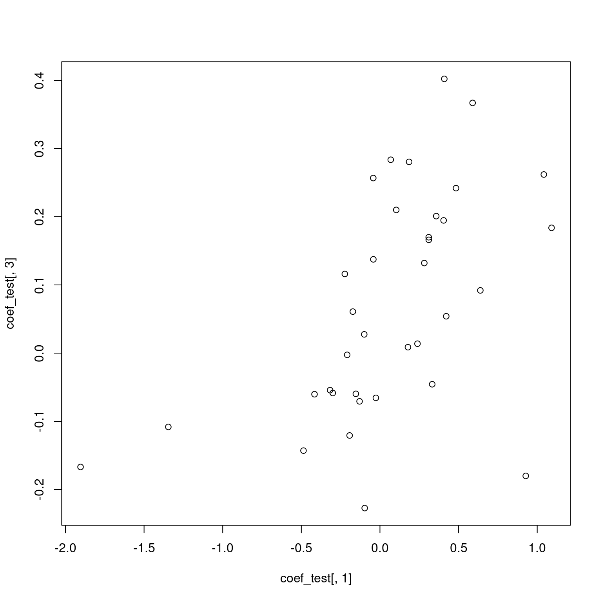
plot(coef_test[,2],coef_test[,4])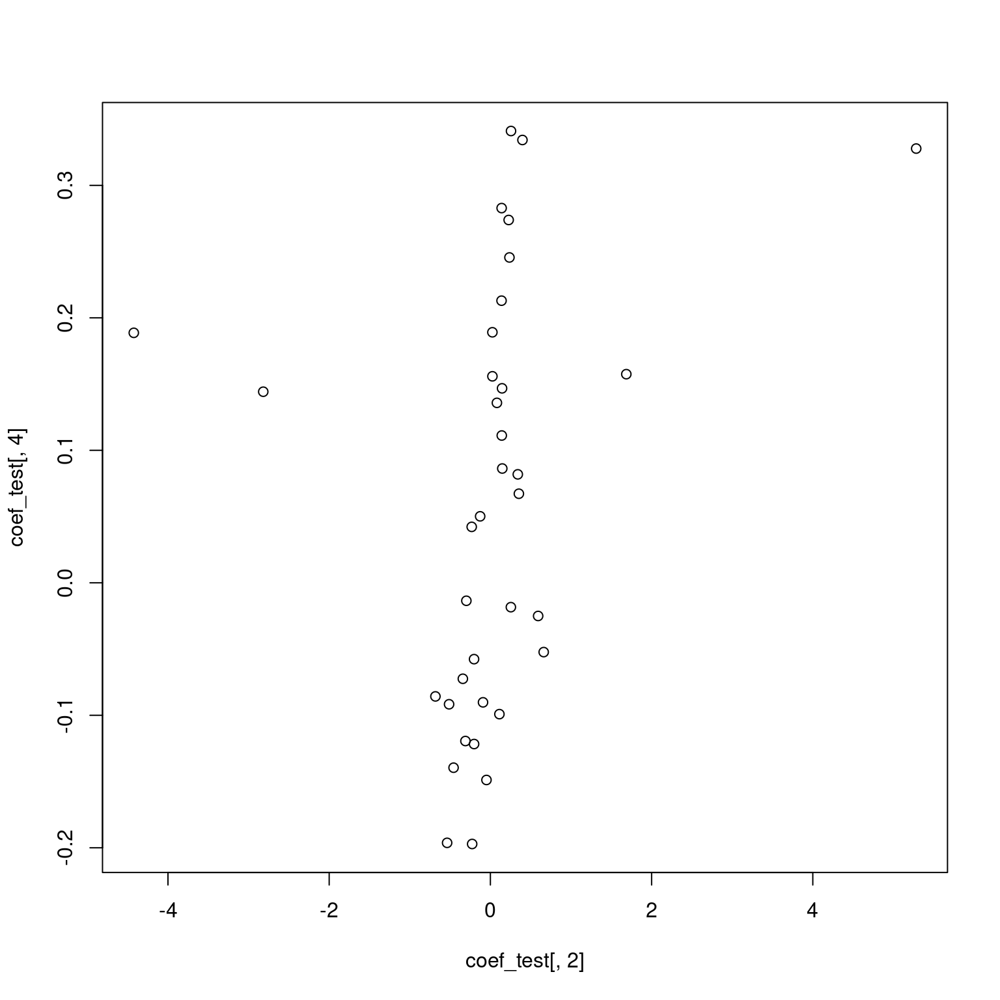